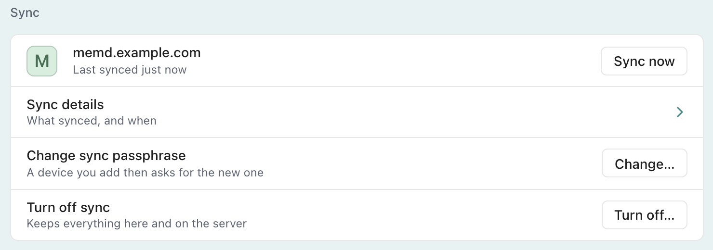
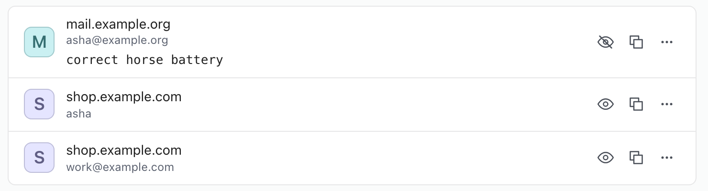

A browser you shape to fit. Your data stays sealed on your own devices.
Free and open source. An experiment in active development, used every day.
Stable 0.3.8 · Dev builds and older releases
Your bookmarks, history, passwords and passkeys follow you between your Mac, your phone and Linux, and no one else can read them.
Sync through a server of your own. It keeps only sealed copies; the key stays on your devices, behind a passphrase only you know.

Sites save their passkeys in Project B, and you sign in with Touch ID or your phone's screen lock. They sync like the rest.
Import passwords, bookmarks and history from another browser on your Mac. Nothing leaves it. Show or copy a password in one press.

Keep work and home apart. Each workspace has its own tabs, and switching is one click.
A preview, for arm64. It installs as a Flatpak.
sudo apt install flatpak. Debian, Fedora, Arch and KDE's own distros have it, or it's one command away.flatpak install --from https://projectb.debkosh.com/project-b.flatpakrefMost browsers carry patches on all of Chrome. Project B starts a layer lower, with Chromium's engine as it comes and everything above it new.
Tabs, the address field, menus and settings are one web page. Restyle it, or write your own.
Tabs, profiles, history, bookmarks and updates are plain Go, apart from how pages draw.
Installed copies keep themselves current. Choose Stable, or Dev for each change as it lands.